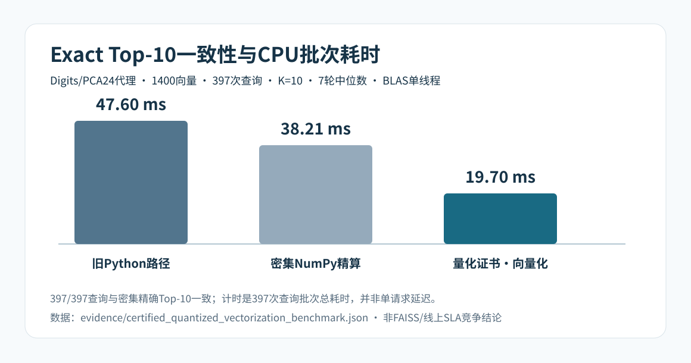
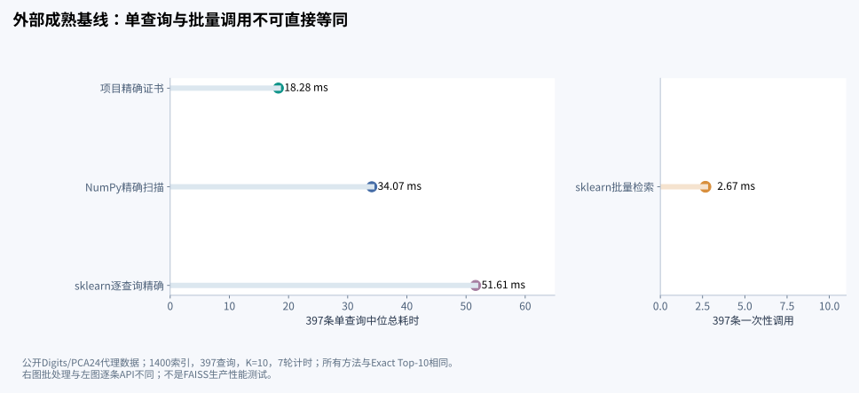

AI检索 / RetrievalEngine
检索可以更快，但能不能保证前十名不变？
近似算法减少计算量，却可能漏掉真正最相关的结果；项目用数学界保证精确排序，再消除Python热循环。
01 / 为什么这个问题值得解决
压缩分数不确定，单纯减少候选会改变Top-K；逐条精算又让解释器开销抵消收益。
02 / 看见差别：普通方法如何失效，项目如何介入
普通方案
普通方法／风险路径
风险所在：关键状态可能被误认
阶段 1量化后凭近似分数排序
阶段 2逐条Python检查候选
阶段 3快慢与排序正确性脱节
项目方案
有证据的项目方法
解决方式：明确条件，留下验证证据
阶段 1残差误差界排除无关项
阶段 2向量化批量精算
阶段 3对照Exact检索逐条认证
阶段 1 / 3
少算一些，不应靠牺牲搜索结果
普通方法：风险在哪里旧做法：压缩向量排序，近似分数的误差可能改变前十名。
项目方法：具体改变什么项目方法：为残差构造上下界，安全排除不可能进入前十名的候选。
过程为机制示意，帮助非技术读者理解不同决策逻辑；不是未经测量的真实系统运行轨迹。
03 / 技术细节与证据放在同一个画面

397/397
与精确Top-10一致
397/397条查询保持Exact Top-10；397次查询批次的7轮中位耗时47.60ms→19.70ms（约2.42倍），仅对Digits/PCA24代理数据及其运行环境成立。
397/397条查询保持Exact Top-10；397次查询批次的7轮中位耗时47.60ms→19.70ms（约2.42倍），仅对Digits/PCA24代理数据及其运行环境成立。
原始数据：RetrievalEngine/certified_quantized_vectorization_benchmark.json。图像采用SVG矢量格式，可放大用于演示和阅读。基线与结论均限定于数据文件对应的实验条件。
04 / 外部成熟库对照：批量API为何更快？
在同一批公开代理数据上，对照外部 scikit-learn NearestNeighbors（brute exact）。项目逐查询调用在该实验中快于scikit-learn逐查询接口；但成熟库一次性批量处理全部查询只需约2.83毫秒，明显优于项目逐条查询的总耗时。这不是谁在所有条件下领先，而是提醒我们正确区分API调用契约和端到端吞吐。

原始数据：scikit-learn与项目同数据同机器七轮性能对照。不适用于推断大规模ANN、GPU或线上SLA。